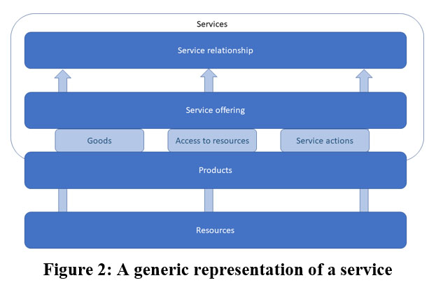
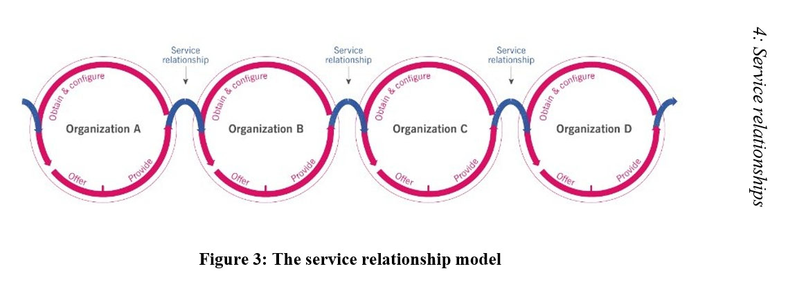

Service offerings
Service offeringsCHAPTER 4: SERVICE RELATIONSHIPS
This chapter explains service relationships in more detail, including:
•Service offerings
•Service relationship management
•Service provision
•Service consumption
“A service offering is a description of one or more services, designed to address the needs of a target consumer group. A service offering may include goods, access to resources, and service actions.”
Table 3: Service Offerings
| Goods | With goods, ownership is transferred to the consumer; for example, buying a car. The consumer takes responsibility for future use of the goods. |
| Access to resources | With access to resources, ownership is not transferred to the consumer; for example, renting a car. Access is granted or licensed under agreed terms and conditions; for example,the consumer might agree not to drive more than 10,000 miles per year. |
| Service actions | Service actions are performed by the provider to address a consumer need; for example, roadside assistance if a car breaks down. They are performed according to the agreement with the consumer; for example, paying extra to have guaranteed assistance within one hour. |
The consumer groups to which a service is offered may be part of the same organisation as the service provider, or they might be external to the service provider. Service providers can offer the same product in different ways to different consumer groups; for example, short-term or long-term car leases, or leases with a right-to-buy at the end of the lease.
“A service relationship is a cooperation between a service provider and a service consumer. Service relationships include service provision, service consumption, and service relationship management.”
Table 4: Service Relationships
| Service provision | “Activities performed by an organization to provide services. This includes management of resources configured to deliver the service, access to these resources for users, fulfilment of agreed service actions, service performance management and continual improvement. It may also include the supply of goods.” |
| Service consumption | “Activities performed by an organization to consume services. This includes the management of the consumer’s resources needed to use the service, service use actions performed by users, and may include receiving (acquiring) goods.” |
| Service relationship management | “This includes joint activities performed by a service provider and a service consumer to ensure continual value co-creation based on agreed and available service offerings.” |
Figure 2 shows a generic representation of a service. You could use this figure to map some of your own organisation’s services and assess how they are offered to consumers.
Figure 2: A generic representation of a service
The service relationship model
Figure 3 3 shows the service relationship model.
3 ITIL® Foundation, ITIL 4 edition, figure 2.1.
In this figure, services delivered by Organisation A create or modify resources within Organisation B. Organisation B can then use these resources to provide services to its own consumers. For example, laptop manufacturer Organisation B buys chips from Organisation A as part of its production process. It sells its laptops to Organisation C, which gives them to its consultants.
This figure shows a supply and consumption chain, but remember that formost organisations, supply and consumption is a more complex network of relationships.